Developing a new pharmaceutical drug is a true marathon, often taking 15+ years of research, clinical trials, toxicology studies, and manufacturing validation. The regulatory submission phase alone can take up to two years, during which teams must consolidate all this evidence into a massive dossier running into thousands to millions of pages. In a highly competitive market, every minute counts—even a one-minute delay in submission can put billions of dollars and years of effort at risk. This is the defining moment where science, compliance, speed, and precision come together to determine a drug’s future.
My Role
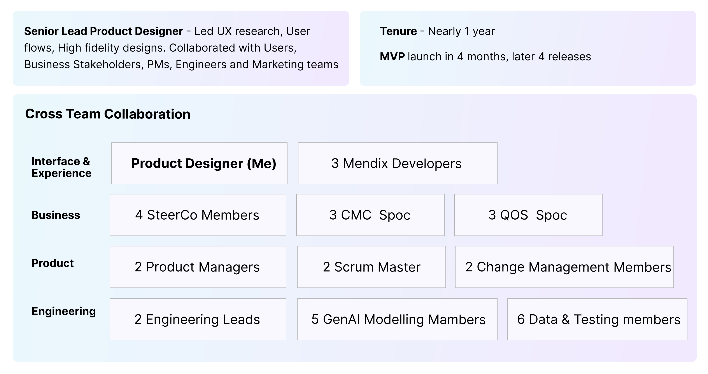My Process
My design process is anchored in strategic prioritization and rigorous validation. I believe that in complex domains, successful design requires separating 'noise' from critical user needs
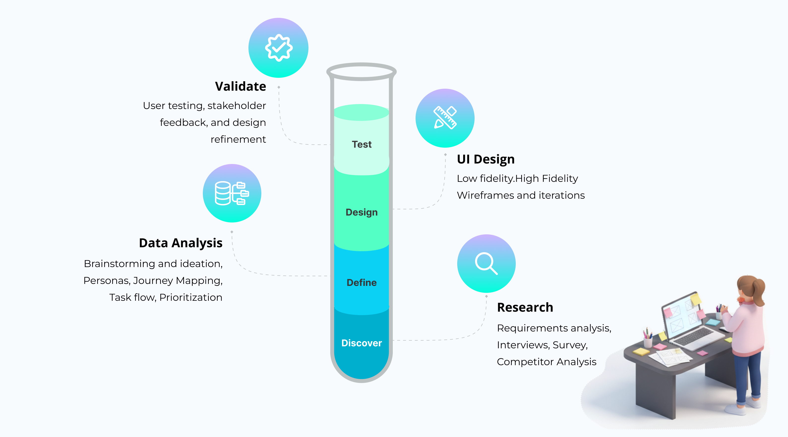Primary Users

Understanding the Problem
To truly understand the challenge, it was essential to first immerse myself in the existing submission workflow followed by pharma companies. This required gaining clarity on how documents are authored, reviewed, validated, and finally submitted to regulatory authorities. I began by thoroughly reviewing:
- * Real regulatory submission documents
- * Global regulatory guidelines (ICH, FDA, EMA)
- * Internal SOPs and process documentation
- * Open-ended interviews with regulatory professionals
- * Contextual walkthroughs of real workflows
- * Consolidating all the insights in Mural board
Regulatory submission authoring is typically slow because writers must reconcile scattered data sources, enforce CTD/eCTD (Common Technical Document) structures, and maintain cross‑document consistency. 80% of their time is spent on "grunt work"—manual formatting, data compilation, and compliance checking.
 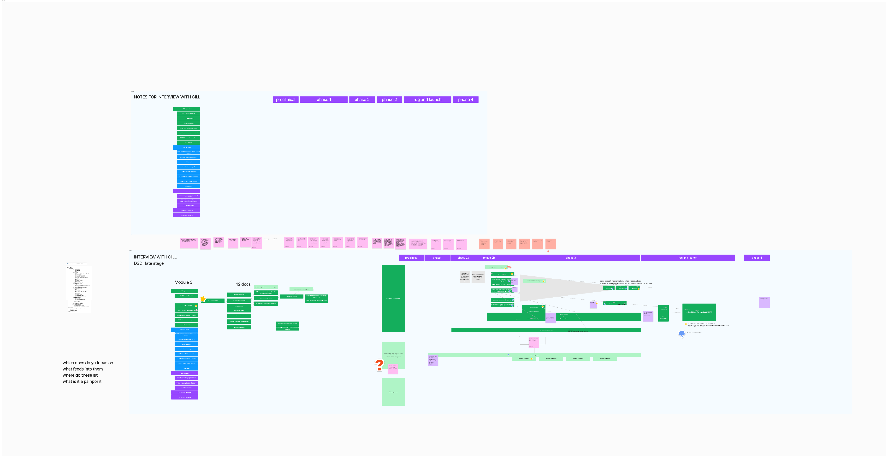
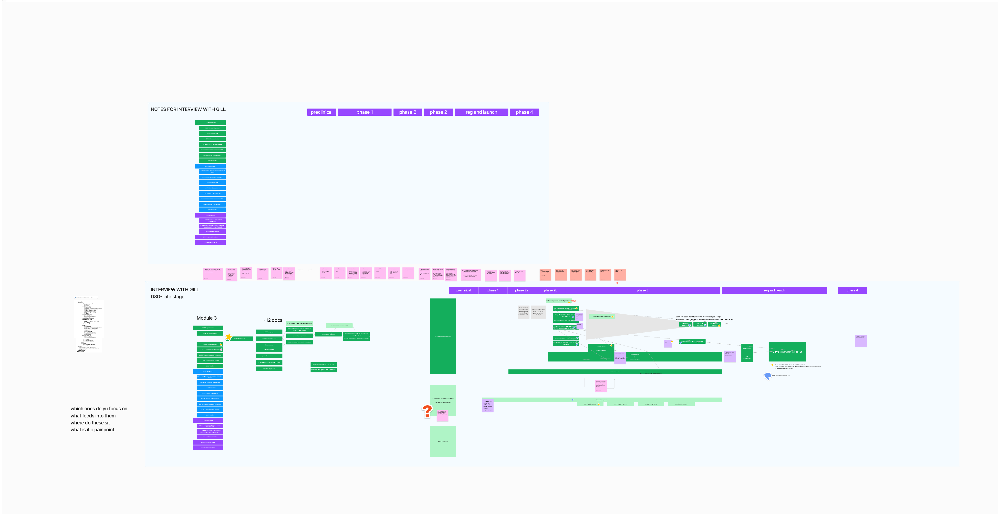

The Regulatory Submission Process
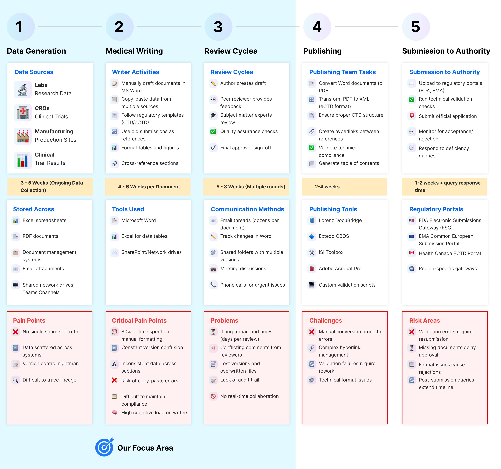Our Focus Area
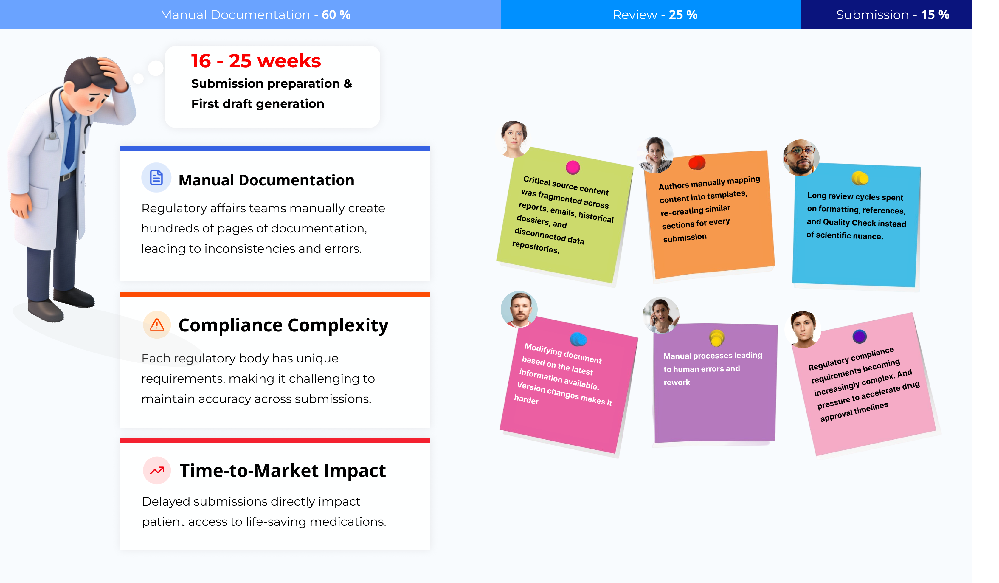Objectives and Goals
As a Product Designer, I frame my objectives by finding the intersection between the Business Mandate (Speed) and the User Reality (Safety/Accuracy). For this project, I built the narrative around three core pillars: eliminating the 'grunt work,' establishing trust, and redefining the user's role.
- The Business Objective: The pharmaceutical industry is aggressively moving toward single-digit week submission timelines. However, our internal data showed a stark reality: our drafting process took 16 to 25 weeks. The primary business objective was to radically compress this timeline into an 8-week target. Thereby accelerate the time to market for a new drug.
- The Design Objective: Solving the '80% Problem' To achieve that speed, I had to identify why we were slow. My initial research revealed that 80% of a medical writer's time was consumed by data gathering, manual formatting, data compilation.
- The Strategic Goal: In a regulated environment Trust as a feature is critical.

Collaboration with Stakeholders
Brainstorming with Cross-Functional Teams (Workshops)
Collaboration went beyond medical and regulatory writers. Given the complexity of regulatory
submissions and the use of AI, it was essential to involve business, technology, GenAI, and data
teams early in the process.
Workshops were conducted with cross functional team, Gathered all the insights, Categorized them to
themes. Then try solving each of these themes These sessions helped map how regulatory content flows
across systems, how AI could assist without compromising compliance, and where human oversight was
critical.
This early, cross-functional alignment reduced ambiguity, surfaced technical and regulatory
dependencies, and ensured the solution was clinically accurate, technically viable, and
AI-responsible.
Key Insights
- 1. Regulatory submissions must follow a strict, region-specific CTD/eCTD structure, even when content is AI-assisted.
- 2. Submission content is reused across multiple dossier versions and submission types, making traceability and version control critical.
- 3. Different teams and individuals are responsible for specific sections and subsections of a submission, requiring flexible ownership and handoffs.
- 4. The system must allow users to work at a granular level—enabling teams to focus only on the sections relevant to their role.
- 5. Role-based access control is essential, as not all users should have visibility or edit
access
to
every drug or document.
Access restrictions may vary:
- Across different drugs
- Within the same drug across specific business areas
- Based on regulatory responsibility or review stage
- 6. GenAI-generated content must be explainable, auditable, and grounded in approved data sources to meet compliance expectations.
- 7. AI should assist with acceleration and validation, while final accountability remains with human experts.
 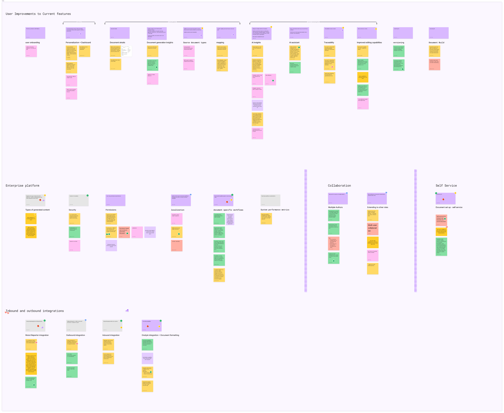
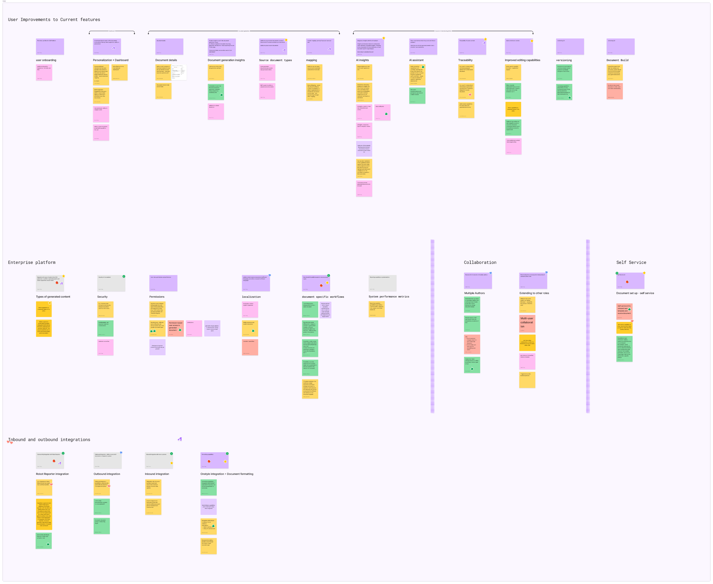

Affinity Mapping
Workflow Challenges
Time & Efficiency
Collaboration
Desired Features
Persona

Competitor Analysis
We weren't just trying to build another document generator; we were trying to solve a specific paradox: achieving 8-week submission timelines without sacrificing regulatory precision. To find the best possible solution, I initiated a competitive analysis across three distinct categories.
Industry Giants
Veeva, IQVIA, IBM. Strong backgrounds but often rigid and slow to adapt to agentic workflows.
Specialized Tools
Artos, Weave. Focused on document automation but lacked deep generative AI integration.
General AI
ChatGPT, Copilot, Copy.ai. High speed but lacked the regulatory guardrails and technical depth needed.


Customer Journey Mapping
The customer journey map illustrates the collaboration between regulatory writers and the platform, from analyzing existing submissions to exporting a regulator‑ready document. It emphasizes the agentic layer, where the AI proactively recommends templates, suggests source documents, and maintains confidence scores. This transforms a manual, error‑prone process into a supervised, AI‑assisted workflow that keeps writers in full control of compliance and narrative quality.

User Needs (Impact-Feasibility Matrix)
The Impact-Feasibility Matrix is a strategic tool used to prioritize features, initiatives, or design decisions by evaluating their potential impact against the effort or complexity required for implementation. In this project, the matrix helped balance high-value AI-driven capabilities, such as inline reference traceability and agentic chat iteration, with regulatory constraints and technical feasibility. This approach ensured that development focused first on features that would deliver maximum benefit to regulatory writers in terms of time savings, trust, and compliance, while managing risks and resource constraints effectively. Presenting this matrix in the case study demonstrates your analytical thinking and product prioritization skills in a complex, regulated environment.

User Flow
A streamlined process that keeps users in control while automating the heavy lifting.
Select Template
Choose eCTD module and target health authority
AI Generation
System generates first draft using product data
Review & Edit
User reviews, edits, and refines the content
Compliance Check
Automated validation against regulatory standards
Submit for Review
Route to stakeholders for final approval
Task Flow

Prototype & Design
This section shows the UI evolution—from simple low-fidelity sketches to polished high-fidelity prototypes ready for development. Starting with user’s pains (89% hate manual creation, need source traceability), I tested 3 prototype versions with 8 regulatory writers to perfect drag-to-map sources, confidence scores, and chat interactions. Technical context: Built on Mendix low-code platform, which sped up prototyping but had limitations like custom component constraints and styling challenges. These forced creative workarounds—like simplified animations and native Mendix widgets for inline references—while keeping the pharma-compliant experience intact.
Low-Fidelity Prototype
The low-fidelity wireframes establish the user journey and core interactions, focusing on the flow from project setup to AI-assisted drafting.


High-Fidelity Prototype
Concept Iterations and comparisons
I explored multiple layout directions for document navigation, section-level editing, AI insights placement, and collaboration patterns—focusing on how users move between dense content, references, and quality signals. In parallel, I evaluated each concept against critical factors such as regulatory accuracy, cognitive load, role-based access, and scalability across different submission types and drug programs. This helped surface trade-offs between flexibility and control, automation and human oversight. This iterative exploration enabled me to converge on a workflow that supports real-world regulatory practices—allowing teams to work confidently on specific sections, maintain traceability to source content, and ensure compliance without disrupting established review processes.
Option A
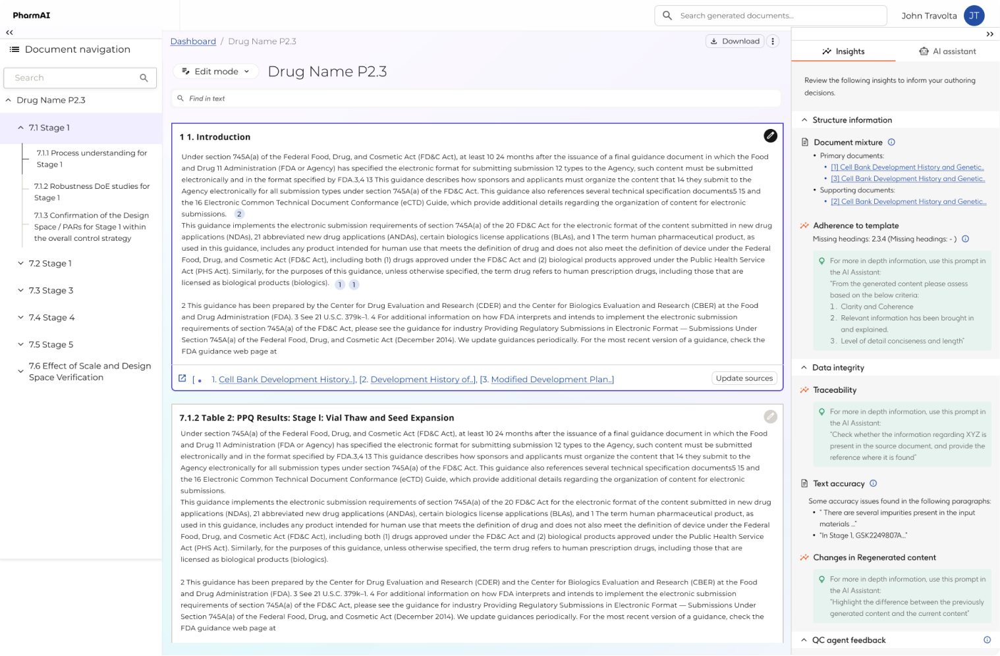 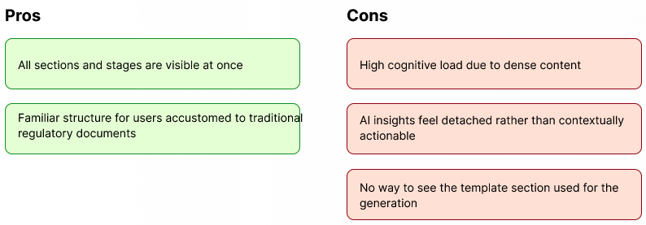Option B (Selected)
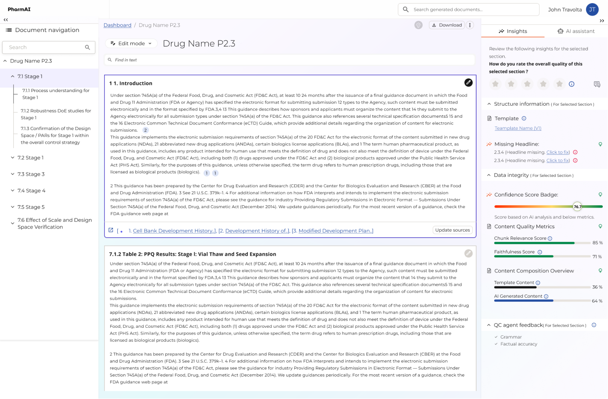 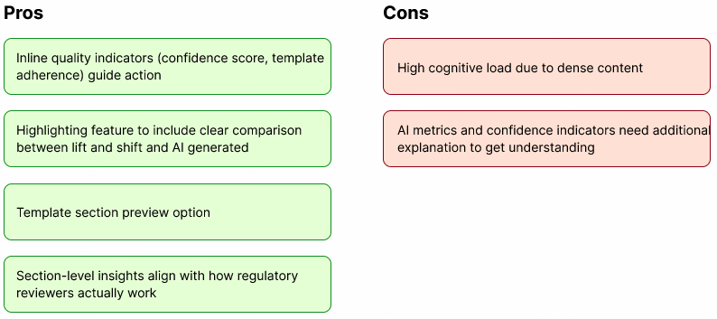Detailed Design & Design Components
Landing Page
- Dashboard: Unified overview of all documents—drafts, generated content, and completed files across business areas.
- Navigation Panel: Quick access to documents and bookmarks, organized by business area.
- Document Status: Three stages: Draft, Generated, and Edit Complete.
- Document Cards: Displays document type, business area, module, and regulatory section.
- Activity Sections:
- Last edited – Resume recent work
- Generated by you – AI-created documents
- Last viewed – Recently accessed files
- 6. Generate: One-click AI content generation from source documents.
- Search: Fast search across all documents.

Document Listing Page
A centralized view to browse both your documents and your team’s documents, organized by clear categories. This listing helps you quickly track, manage, and access generated content across projects. Each document entry displays key details for easy identification:
- Document Type – Type of regulatory or business document
- Title – Document name
- Author – Creator or owner
- Product Family / Drug – Related product or compound
- Date – Created or last updated
- Status – Draft, Generated, Edit Completed, Archived

Document Generation Process
Step 1: Document Configuration
"Users define document parameters including document type, output format, and regulatory requirements. The form captures essential metadata like document name, product details, and specific regulatory sections to ensure the generated content meets submission standards."

Step 2: Source Files Mapping
"Users upload and map relevant source documents that will inform the AI generation. The interface shows proposed source files with document types, sections, and page ranges. Users can review, add, or remove source materials to ensure comprehensive content generation."

Step 3: Summary and Final Review
"Final validation screen showing all mapped source documents with their metadata - document IDs, versions, upload dates, and contributors. Users can see exactly which files will be used for generation, organized by regulatory section (3.2.P.3.1.2.1). The system displays document lineage and allows users to save drafts or proceed with final document generation. This ensures full traceability and regulatory compliance before AI processing begins."

Generated Document Interface
- Document Viewer:Structured view of all sections with easy navigation and embedded tables.
- Edit Mode:Inline editing to update text, data, and technical content while preserving format.
- AI Insights Panel:Quality checks for structure, compliance, missing sections, and data accuracy.
- AI Assistant:Chat-based support for edits, suggestions, and regulatory guidance.
- Advanced Features:
- Multi-format download
- Automatic reference management
- Version control & change tracking
- AI confidence scoring
- In-document search
- Outcome:Faster, compliant, and high-quality regulatory documents with minimal effort

The trust inputs- Confidence score, Key matrices, Content Composition, Highlighting
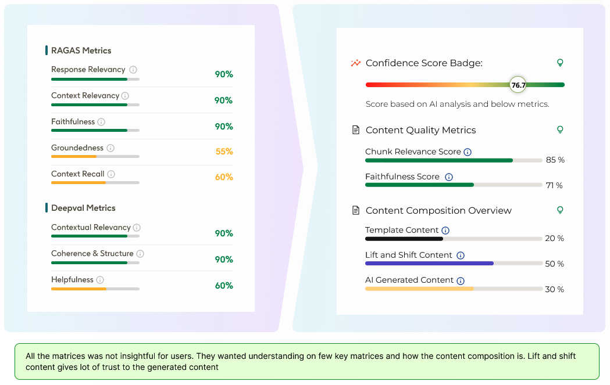Inline Reference Panel
A side panel that displays source chunks alongside generated content for easy comparison. Includes direct document links for deeper review and verification.

Option A
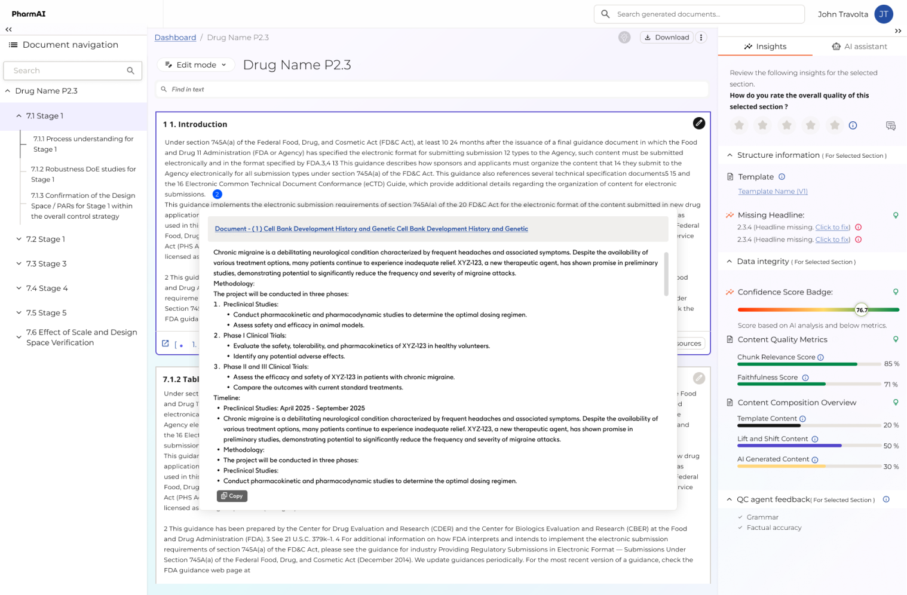 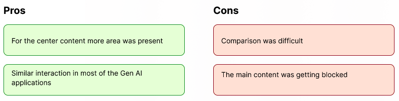Option B (Selected)
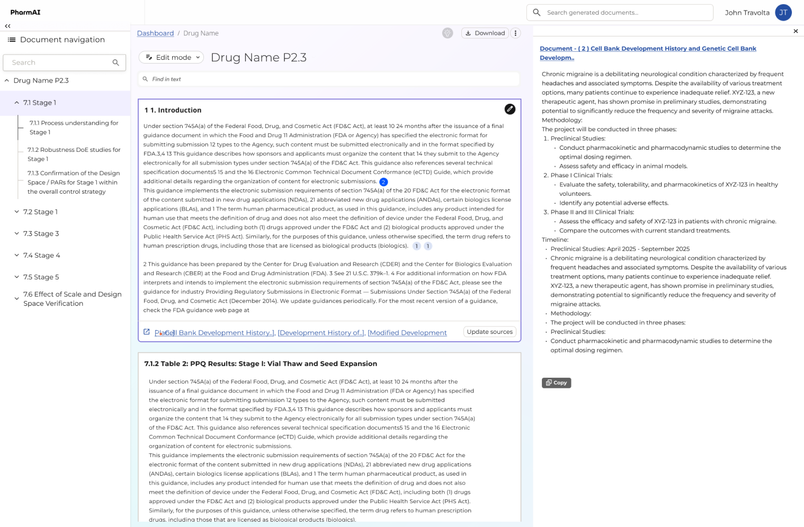 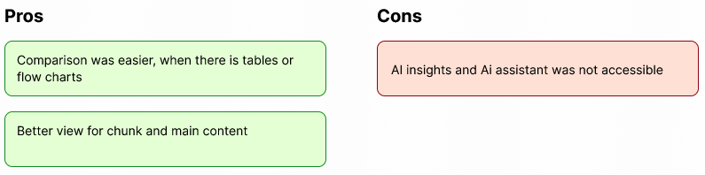
Usability Testing
To validate our design decisions, I conducted several rounds of usability testing with regulatory affairs professionals. The goal was to validate whether regulatory writers could comfortably work with the AI co‑pilot throughout the drafting workflow without sacrificing control. We focused on learnability, transparency, and task efficiency.
Participants and Setup
- 6 participants across roles: Senior Medical Writers, Regulatory Affairs Leads, and Quality/CMC Reviewers.
- 5–15 years of experience in regulatory submissions.
- 60–90 minute moderated sessions conducted remotely.
- Scenario-based scripts using realistic templates and sample AI outputs to ensure domain relevance.
Key Metrics
We measured success through task completion rates, the time taken to verify AI-generated content, and the qualitative trust score assigned by participants after interacting with the co-pilot.

Results & Outcomes
The platform delivered significant efficiency gains while maintaining the highest regulatory standards.
From 25 weeks down to 8 weeks for a complete submission draft.
Minimal critical errors flagged during automated pre-submission readiness checks.
High-precision AI extraction from clinical source documents.
Future Roadmap & Key Learnings
Future Roadmap
Extended Agent Capabilities
Transitioning from drafting assistants to autonomous agents capable of performing complex pre-submission readiness checks and multi-document consistency audits.
Multimodal Intelligence
Expanding the agent's ability to interpret and generate complex medical charts, diagrams, and high-resolution imaging data directly from source material.
Region-Specific AI
Developing specialized LLM modules tailored for specific regulatory bodies (FDA, EMA, NMPA) to ensure localized compliance by default.
Key Learnings
Control > Speed
For expert users, the ability to audit and override AI decisions is far more valuable than pure automation speed. Trust is built through visibility, not magic.
Explainability is Key
The agent must not just provide an answer, but also the 'why' behind it. Citations and source mapping are the currency of trust in pharma.
Agentic Co-creation
Moving from "AI as a tool" to "AI as a collaborator" requires a design language that emphasizes iterative feedback and shared context.